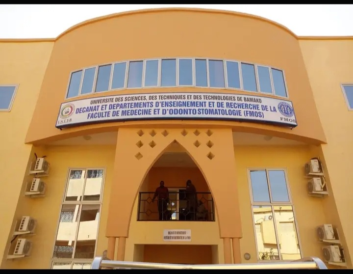

Facullté de Médecine et d'Odonto-Stomologie (FMOS)

Située à Koulouba, Bamako, La FMOS est une institution publique dédiée à l'enseignement supérieur en médecine et en odontostomatologie. Les études
à la Faculté de Médecine et d'Odontostomatologie (FMOS) conduisent à l'obtention du doctorat en médecine générale ou en chirurgie dentaire (diplôme d'Etat).
La FMOS délivre également le Diplôme Universitaire (DU), le Diplôme Interuniversitaire (DIU), le Master et le Diplôme d'Etudes Spécialisées (DES).
Les études de médecine et d'odontostomatologie sont organisées en trois (3) cycles de quatorze (14) semestres en médecine et douze (12) semestres odontostomatologie :
- Un premier cycle appelé Licence d'une durée de six (6) semestres validés par 180 crédits
- Un deuxième cycle ou master d'une durée de quatre (4) semestres validés par 120 crédits
- Un troisième cycle ou doctorat d'une durée de quatre (4) semestres en médecine validés par 120 crédits et de deux (2) semestres en odontostomatologie validés par 60 crédits
Les niveaux licence et master ne donnent pas droit à des diplômes pour exercer la médecine ou la chirurgie dentaire.
Les études sont composées de cours magistraux (CM), de travaux dirigés (TD), de travaux pratiques (TP) et de stages organisées sous forme d'Unités d'Enseignement (UE).
Une UE peut être composée d'Eléments constitutifs (EC) auxquels sont alloués des crédits. Un crédit équivaut à 20 heures de charge de travail réparties en temps de présence
aux CM, TD, et TP et en temps de travail personnel de l'étudiant(TPE).
L'organisation des enseignements et les modalités d'évaluation sont fixées par le Doyen,
sur proposition du conseil des professeurs.
La liste des Unités d'enseignement et leurs éléments constitutifs, le volume horaire et les crédits alloués à chaque unité d'enseignement ainsi que le
programme détaillé figurent dans la maquette pédagogique.
CONDITIONS D'ACCES
Peut s'inscrire à la Faculté de Médecine et d'Odontostomatologie, tout candidat remplissant les conditions suivantes :
- être titulaire du baccalauréat malien série Scientifique de l'année en cours, (Sciences exactes, Sciences expérimentales) ou d'un diplôme étranger Jugé équivalent
- avoir une moyenne générale supérieure ou égale à 12/20 au baccalauréat
- être âgé de 21 ans au plus
NB : Le nombre maximum d'étudiants non maliens est fixé à 10% de l'effectif.
L'inscription administrative est annuelle et est obligatoire. Les modalités d'inscription sont détaillées dans le guide de l'étudiant.
Tout étudiant non inscrit perd la qualité d'étudiant.
L'étudiant est autorisé à prendre :
- au plus quatre (04) inscriptions pour la licence
- au plus trois (03) inscriptions pour le master
- au plus trois (03) inscriptions pour le doctorat en médecine, et deux (02) inscriptions pour le doctorat en chirurgie dentaire